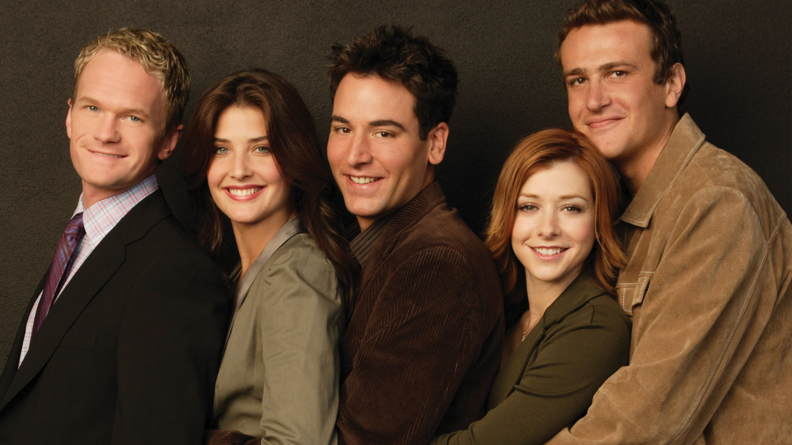

How I Meet Your Mother
Résumé de la série :
La série débute en 2030, lorsque Ted Mosby raconte à ses deux enfants comment il a rencontré leur mère. Il se remémore ses jeunes années, et le pilote fait place aux souvenirs de Ted en 2005, où il apprend que son meilleur ami Marshall Eriksen va demander à Lily Aldrin de l’épouser. Ted se demande quand il rencontrera sa future épouse. C’est alors qu’il rencontre Robin Scherbatsky lors de sa dernière sortie au bar où il a l’habitude d’aller, le MacLaren's Pub, où un de ses amis, Barney Stinson, l’aide à faire des rencontres. Et c'est ainsi que commence l'incroyable et très longue histoire de Ted, jusqu'à sa rencontre avec la fameuse mère de ses enfants.
Saison 1:
Presse :

4,5
Spectateur :
3